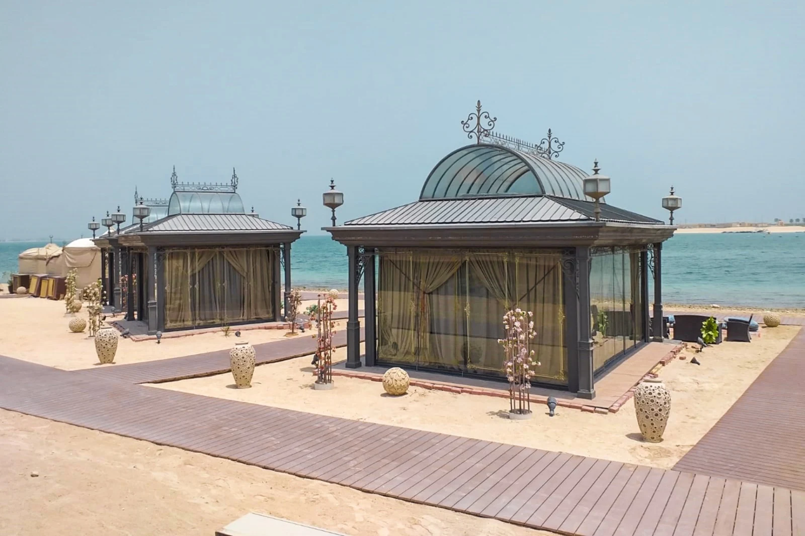
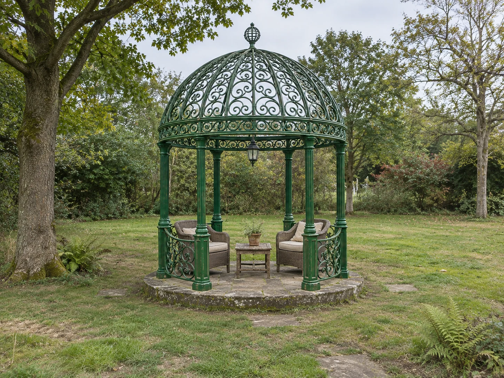
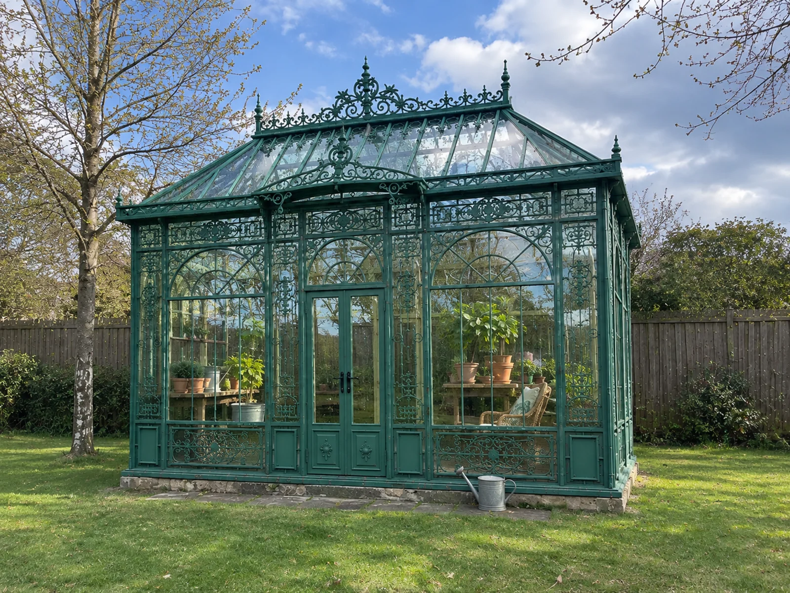
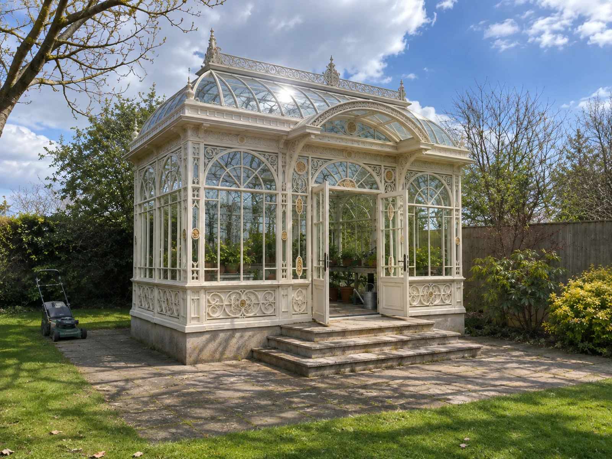
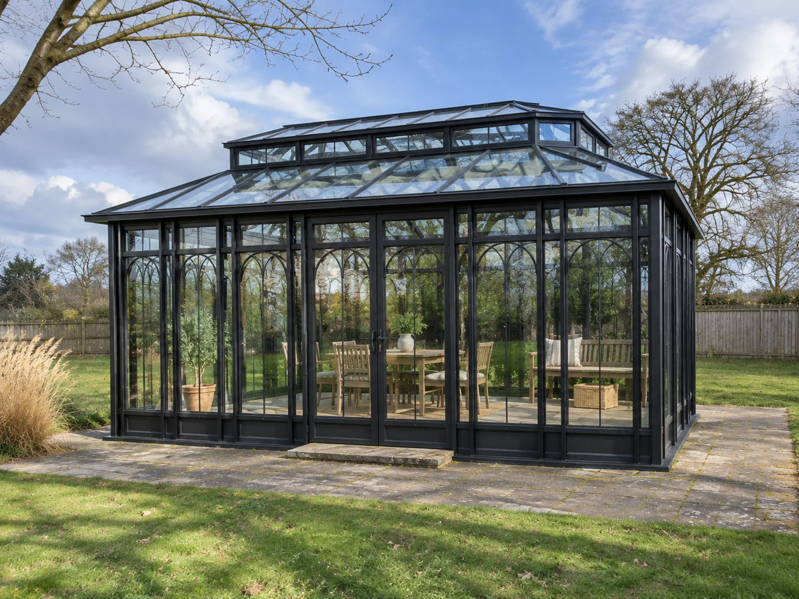
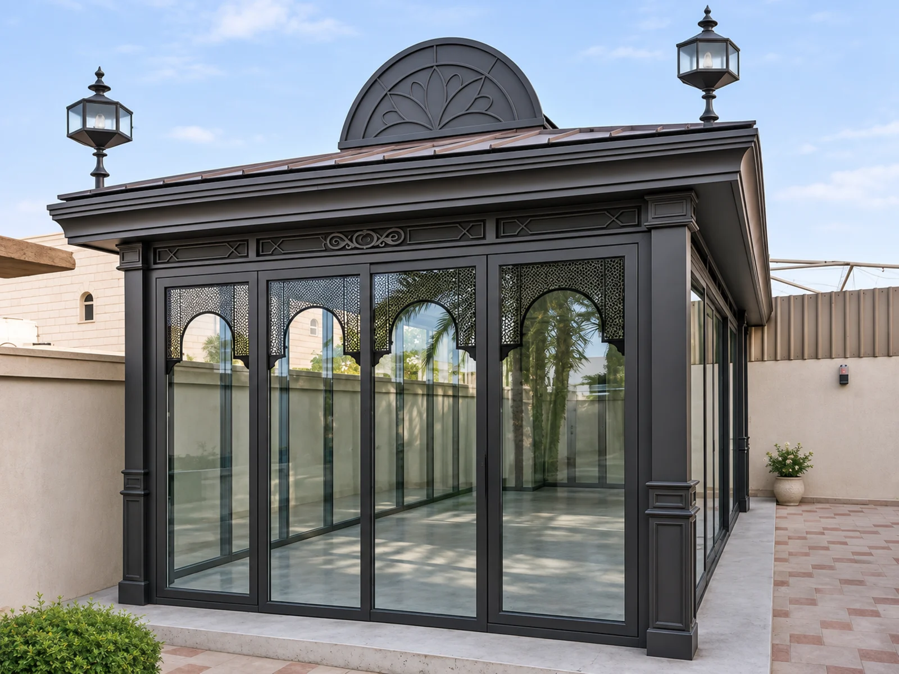
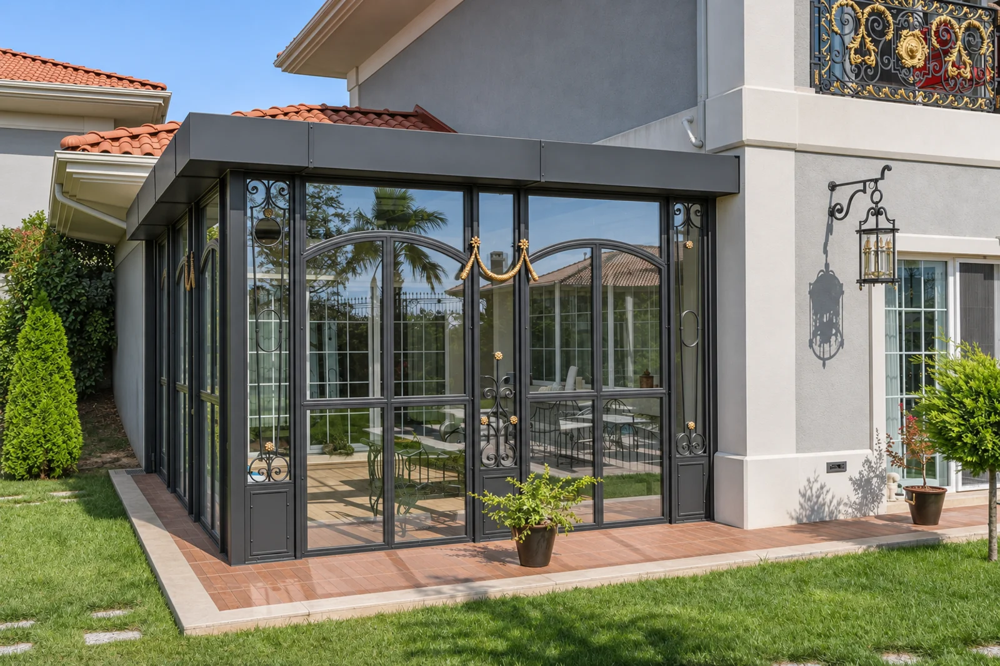

Classic
ClassicGothic Arch Conservatory
A dark conservatory with tall pointed arches, intricate metalwork and a raised glazed entrance roof.
Explore project
Conservatories & garden structures
Completed project
Explore conservatories, glazed extensions and freestanding garden structures. Open a card to see its project photographs, installation views or design study.
ClassicA dark conservatory with tall pointed arches, intricate metalwork and a raised glazed entrance roof.
Explore project Classic
ClassicA green conservatory with a sweeping curved façade, tall glazed panels and ornamental roof cresting.
Explore project Classic
ClassicWhite framing, coloured glass accents and a rounded glazed bay set against a pale pink house.
Explore project Classic
ClassicTwo domed glazed bays flank a tall central entrance with slender ornamental steelwork.
Explore project Classic
ClassicA black garden salon with gold ornamental metalwork, decorative railings and a curved interior ceiling.
Explore project Classic
ClassicA green conservatory with a central glazed gable, fan-shaped glazing details and garden-facing double doors.
Explore project Classic
ClassicA compact dark-framed garden pavilion with tall glazing, curved decorative bars and a pyramidal roof topped by an open metal finial.
Explore projectClassicA dark glazed pavilion with rounded bays, a raised curved roof lantern and ornamental double doors, photographed in snow.
Explore project
ClassicA group of freestanding domed glass pavilions on a beach, used as private cabanas for a hospitality venue.
Explore project Contemporary
ContemporaryA rounded glass extension beside a terracotta-coloured house, with a curved glazed roof and two outward-opening front windows.
Explore project
ClassicAn open green metal dome above two chairs on a low stone platform.
Explore project
ClassicA compact green glasshouse on a lawn, with ornamental glazing and plant pots inside.
Explore project
ClassicA freestanding cream pavilion with arched glazing, open doors and a shallow stone approach.
Explore project
ContemporaryA dark-framed glass room with a raised roof lantern on a paved base in a modest garden.
Explore project
ClassicInstallation photography
A dark garden salon photographed during installation, with glazing, roof-edge details and site materials visible.
Explore project
ContemporaryA simple dark frame and broad glazed elevations create a direct visual connection between the house, terrace and lawn.
Explore projectYour next space
Share the setting, the way you want to use the space and the designs you are drawn to.
Plan your project